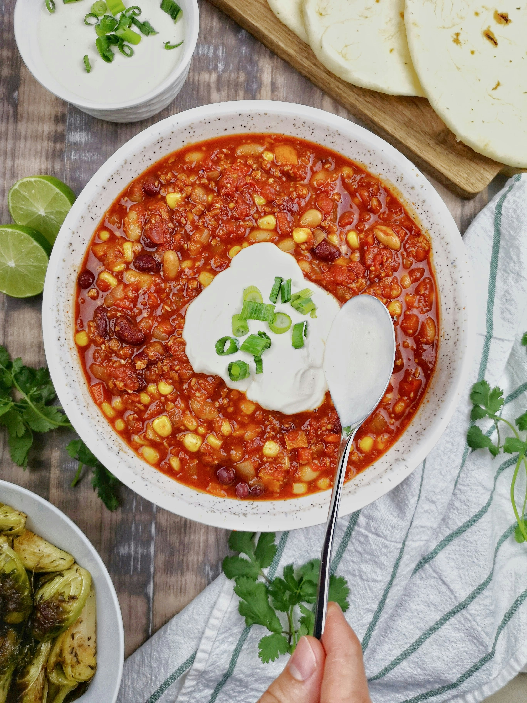

Chili Recipe

Description
Delicious homemade chili paired perfectly with cornbread or with a side of corn chips.
Top this chili off with cheese, sour cream and lettuce!
Ingredients
- 2 pounds lean ground beef
- 1 onion diced
- 1 jalapeno seeded and finely diced
- 4 cloves garlic minced
- 2 1/2 tablespoons chili powder divided
- 1 teaspoon cumin
- 1 green bell pepper, seeded and diced
- 14 1/2 ounces crushed tomatoes
- 19 ounces kidney beans
- 14 1/2 ounces dice tomatoes
- 1 1/2 cups beef broth
- salt and pepper
Steps
- Combine ground beef and 1 1/2 tablespoons chili powder.
- In a large pot, brown ground beef, onion, jalapeno, and garlic. Drain any fat.
- Add in remaining ingredients and bring to a boil. Reduce heat and simmer uncovered 45-60 minutes
or until chili has reached desired thickness.
- Top with cheddar cheese, green onions, cilantro or other favorite toppings.